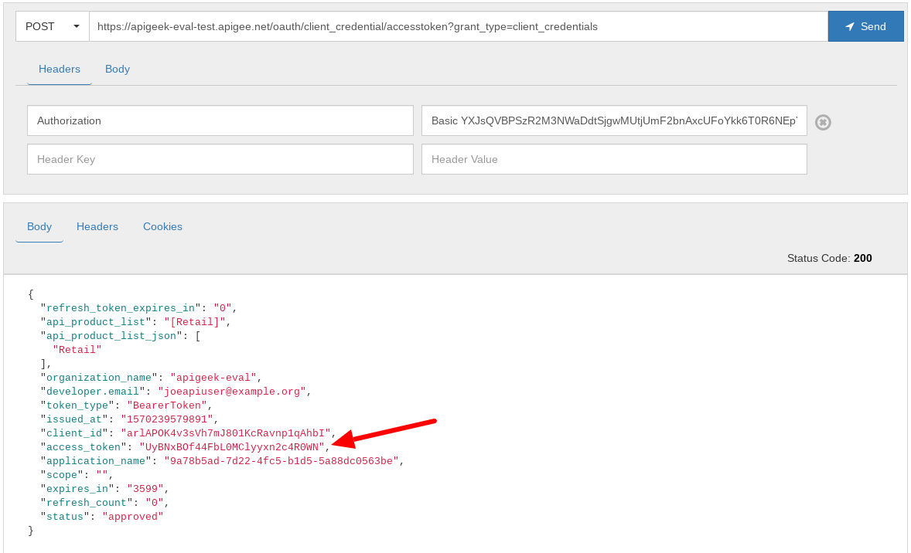
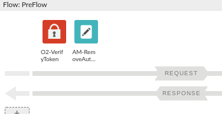

If you truly want to control access to your API following today's best practices, you'll be looking into OAuth.
As seen in the class, OAuth offers different ‘flows' or ‘grant types'. We'll see how to implement the most simple one of them all: client credentials.
What you'll learn
- How to protect your API with OAuth
- How to invoke the Apigee's demo OAuth proxy
- How to invoke your API passing in an OAuth token
What you'll need
- Your proxy created in the previous lab
- The default oauth proxy -- download from here and deploy it to the test environment if you don't already have an oauth proxy in your org
Use case
You want your API to be consumed by many different clients and you want to control who has access to the API.
Download a working solution to the previous lab as a proxy bundle ZIP file:
Prerequisites:
- Target Server: TS-Retail (instructions in lab 2)
- Product, Developer and App (instructions in lab 3)
Find your spec ID. When you open your spec in the spec editor, the link will be in this format, with the spec ID at the end of the URL:
https://apigee.com/organizations/YOURORG/specs/folder/FOLDERID/editor/YOURSPECID
Navigate to your proxy and upload the bundle as a new revision:

Select the association.json resource. Replace YOURORG and YOURSPECID with the values from the spec URL.

Once updated, the association.json should look something like this:
{
"url": "/organizations/apigeek-eval/specs/doc/207966/content"
}
Click Save to save your proxy. Open the Deployment menu, and check the deployment status. Click on test to deploy this revision of the proxy.

Test will be green when it is deployed.

- Add an OAuth policy to your proxy to validate tokens
- Make sure the oauth proxy is deployed
- Generate a new OAuth token
- Invoke your API with the newly generated token
Go back into our API proxy.
Whenever we save changes to a proxy, it will overwrite the current revision. To make sure we can go back to our previous version if we want to, let's save as a new revision.

Then we'll need to deploy this version to test. Click the Deployment menu, and then select the test environment. It will be green when the selected revision is deployed.

Select the default Proxy Endpoint and click on, PreFlow. You should see the graphic representation of its policies. Detach the Verify API Key policy by hovering over it and clicking the X:
You'll notice a broken link icon next to the Verify API Key policy -- this indicates that the policy is no longer attached to any flows. Keep the API key policy there -- we'll switch back to API key validation at the end of the lab, so we won't have to worry about expired tokens during later labs.
Click on +Step to add an OAuth v2.0 policy:
Then add an OAuth v2.0 policy, changing the name to:
O2-VerifyToken
Click on the policy and you should see the current configuration:
<?xml version="1.0" encoding="UTF-8" standalone="yes"?>
<OAuthV2 async="false" continueOnError="false" enabled="true" name="O2-VerifyToken">
<DisplayName>O2-VerifyToken</DisplayName>
<Properties/>
<Attributes/>
<ExternalAuthorization>false</ExternalAuthorization>
<Operation>VerifyAccessToken</Operation>
<SupportedGrantTypes/>
<GenerateResponse enabled="true"/>
<Tokens/>
</OAuthV2>By default, the policy already comes ready to verify incoming tokens.
According to the OAuth specification, an OAuth token must be passed in via the Authorization header with prefix of ‘Bearer'. Since we are not specifying an alternate location using the <AccessToken> element, the access token will be taken from the Authorization header.
Make sure you save your proxy and that you are testing the correct revision.
Switch to the trace tab and let's verify we are receiving the token in the right location.
If you simply invoke the API from the trace itself, you should be receiving a 401 as response. Pay attention this time, because the response and policy executed should be the OAuth policy and no longer the Verify API Key policy.
Click on the circle as shown below:
In order to create a token, we'll need a proxy that generates tokens. By default, all new orgs in Apigee come with a demo implementation that can be used for our lab purposes.
For production, a different OAuth proxy should be created with proper traffic control, error checking, etc.
If you do not see a green circle under status, for the oauth proxy, go in the proxy and deploy it via the ‘Deployment' drop down, by selecting the ‘test' environment.
To generate our OAuth token, we need to authenticate our application. Get the key and secret from the application:
In another REST Client tab (open a separate tab), enter the following, substituting your org name for "YOURORG":
Request | |
Verb (dropdown) | POST |
URL | https://YOURORG-test.apigee.net/oauth/client_credential/accesstoken?grant_type=client_credentials |
Headers | |
Authorization | Basic {base64Encode(key + ':' + secret)} |
To get the value for a Basic Auth header, create a string with the username (consumer key in this example) and password (consumer secret) separated by a colon. Spacing is very important -- don't add any spaces around the colons or at the beginning or the end. This string should then be Base64 encoded. The value of the authorization header should be "Basic" followed by the base64 string, separated by a single space. Example is shown below -- use your own consumer key and secret.
consumer key: oYEyxpysu9nhhlCZUbefOvrcH0zzsqGo
consumer secret: IqSNqBDL3cCiTKAA
string: oYEyxpysu9nhhlCZUbefOvrcH0zzsqGo:IqSNqBDL3cCiTKAA
Base64 of string: b1lFeXhweXN1OW5oaGxDWlViZWZPdnJjSDB6enNxR286SXFTTnFCREwzY0NpVEtBQQ==
Header value: Basic b1lFeXhweXN1OW5oaGxDWlViZWZPdnJjSDB6enNxR286SXFTTnFCREwzY0NpVEtBQQ==To generate the base64 encoding to be passed in the Authorization header, you may use a command line tool, for example:
echo -n "oYEyxpysu9nhhlCZUbefOvrcH0zzsqGo:IqSNqBDL3cCiTKAA" | base64Or, you may use another tool such as an online tool (ie, https://www.base64encode.org/) or a Chrome extension (Encode-Decode).
Some other REST clients such as Postman, will facilitate the encoding and generation of the Authorization headers as well. Use the key as username and secret as password:
Once you have the header properly configured and you send your request, you should receive a 200 OK with a JSON formatted response, Look for the line that contains the access token:

Copy the token from the OAuth proxy response and use it in the Authorization header for your own API. Make sure you add the ‘Bearer' prefix in front of the token with a single space.
Even though the bearer token is correctly added, we are getting a 401 error! You may have an idea what is happening, but the best thing to do is to trace the request. Trace the categories call -- what do you see?
What is unusual about this call? Try to figure out what is happening before moving to the next section.
Did you figure out what happened? Note that the OAuth policy does not have the red circle with an exclamation point that we saw when we had no token. That exclamation point would indicate that the policy raised a fault. This OAuth policy successfully verified the OAuth token.
When you click on the circle after the backend service, you'll see that the backend returned the 401. The error message from the backend is invalid credentials. What credentials did we send to the backend? Check the circle before the backend service:
Aha! The Authorization header we sent with the Bearer token was sent through to the backend service! Of course the backend service had no knowledge of that token, and it therefore returned an error.
The trace tool can help track down issues like this -- use the trace tool whenever you get a response you don't expect.
Remove the Authorization header
It is always best practice to remove the header or any other information that is not relevant to the backend before invoking the backend. By default, Apigee operates as a proxy and any headers and query parameters received are passed to the backend.
Removing the Authorization header after we use it ensures the token never leaks out of Apigee. To do that, add an ‘Assign Message' policy right after the OAuth policy.
Use the following configuration to remove the Authorization header:
<AssignMessage async="false" continueOnError="false" enabled="true" name="AM-RemoveAuthHeader">
<Remove>
<Headers>
<Header name="Authorization"/>
</Headers>
</Remove>
<IgnoreUnresolvedVariables>true</IgnoreUnresolvedVariables>
<AssignTo createNew="false" transport="http" type="request"/>
</AssignMessage>Save your proxy. Your PreFlow should now look like:

Now when you send the request with the token, it should return the expected categories list.
Switch back to Verify API Key
We will need either API key or OAuth token validation to be done in our proxy. Let's switch back to API key validation so we won't have to worry about token expiration.
Hover over the OAuth policy and click the X to detach the policy.
Now we'll drag the Verify API Key policy back into the PreFlow. Make sure it is attached before the Assign Message.
Best practice would be to update the AssignMessage to also remove the apikey header, since the backend doesn't need that either. Don't forget to save your proxy!
You have successfully modified your proxy to use the OAuth2 Client Credentials grant type to access your proxy, and have retrieved a token using basic auth and the included oauth proxy.